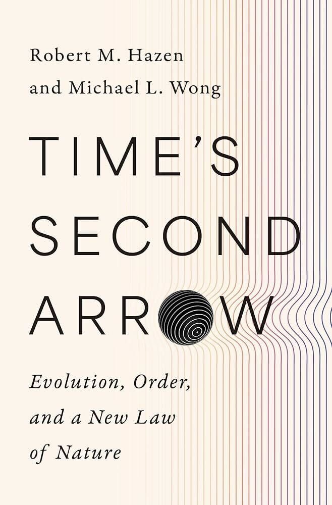
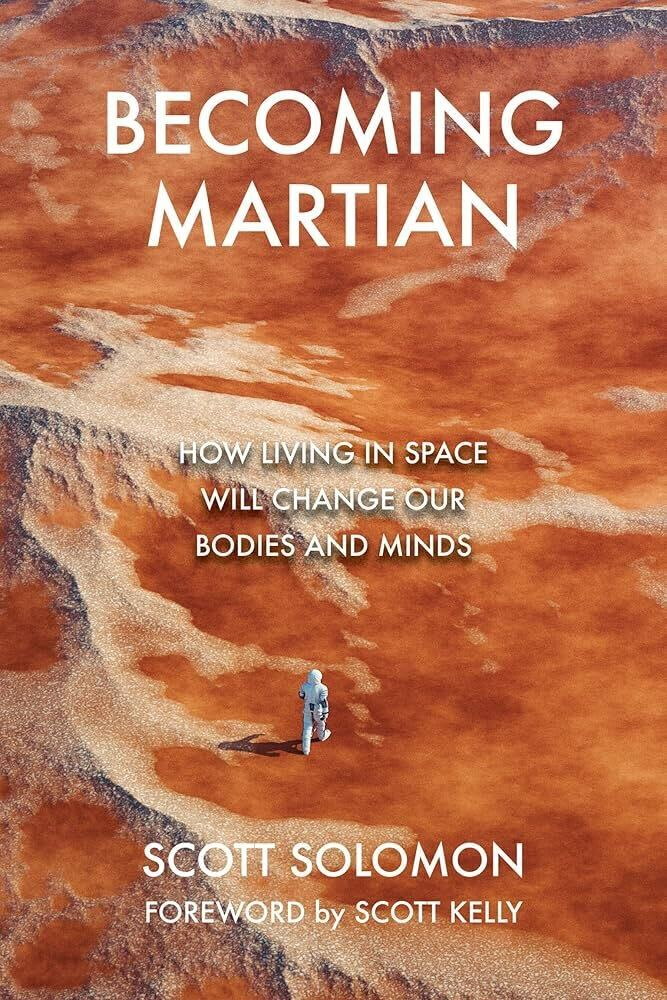
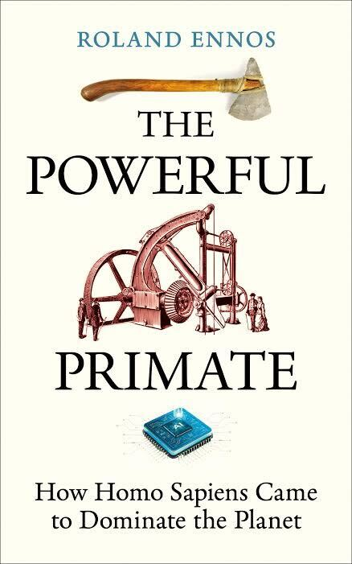
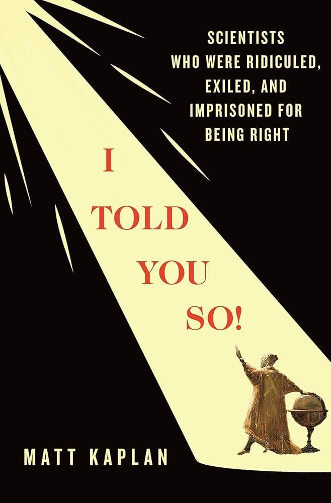
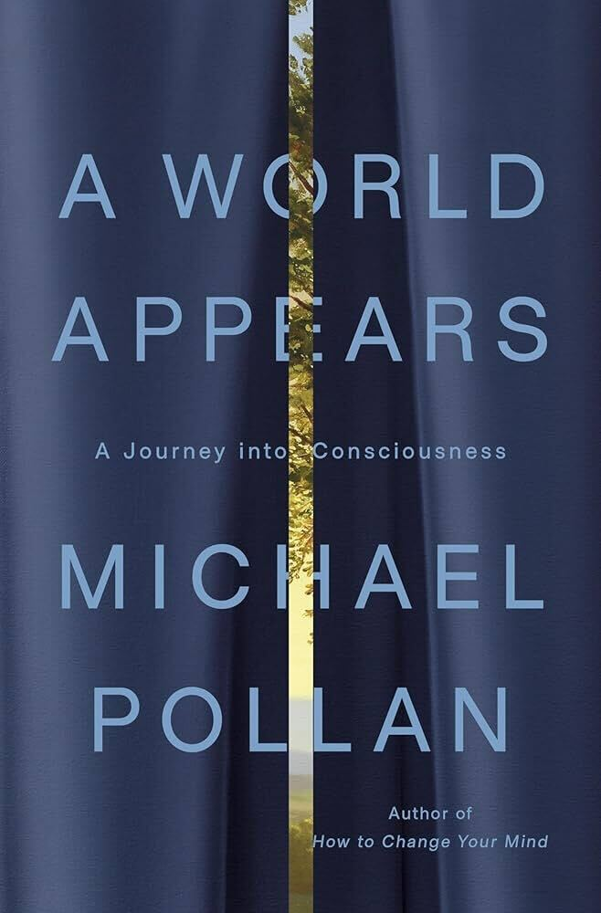
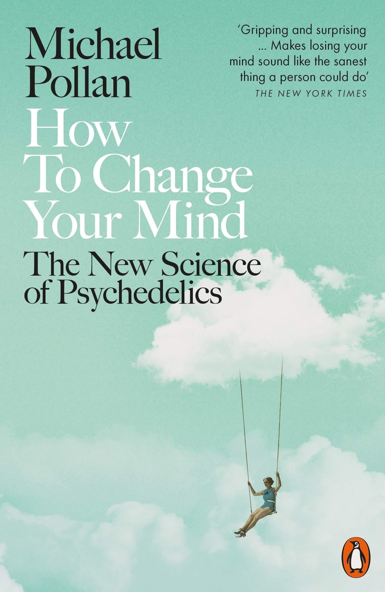

The most interesting nonfiction books coming out this month
📅 February 2026Yes, it's Valentine's Day month — but we're skipping the love books. This month I'm excited about a proposed new law of nature, what happens to our bodies in space, how humans dominated the planet, scientists who were punished for being right, the mystery of consciousness, and a fascinating look behind China's Great Firewall.
▶ Watch the full video breakdown on YouTube

A distinguished geoscientist and rising-star astrobiologist offer a stunning new theory upending 150 years of established science — and an inspiring new vision of our universe. Of the codified laws of nature, famously only one inscribes a direction to time: the dreaded second law of thermodynamics, which declares that the disorder of a closed system tends to increase as time passes. While the traditional second law declares that entropy increases in a closed system, Hazen and Wong argue for a new, complementary law where complex, ordered systems naturally emerge and persist. They propose that evolution is a universal process. This new law provides a framework for understanding the emergence of life, identifying potential life on other planets, and viewing the universe as having a drive toward invention and progress.

We are on the cusp of a golden age of space travel in which, for the first time, it will be possible for large numbers of people to venture into space. Some intend to stay. But what happens — and will happen — to us in the extreme conditions of space? What should space tourists expect during a journey to an orbiting space station, the Moon, or Mars? What would happen to children born on another planet? Would they evolve into a new species? Scott Solomon explores the many ways in which humanity's migration into space will change our bodies and our minds.

Roland Ennos traces human evolution and how we became the planet's apex predator, highlighting the critical role of technology and energy harnessing in our species' dominance. The book argues that human technological ingenuity — beginning with simple tools and progressing to modern computers and atomic energy — is what allowed Homo sapiens to conquer the planet. Ennos focuses on how humans have progressively controlled energy from various sources: wood, animals, water, wind, sun, and fossil fuels to fuel the rise of civilization. He also suggests that the same engineering skills that led to our current challenges can pave the way for a more sustainable future.

An energetic and impassioned work of popular science about scientists who have had to fight for their revolutionary ideas to be accepted — from Darwin to Pasteur to modern-day Nobel Prize winners. Kaplan uses captivating examples to illustrate how the scientific establishment often fights new ideas, even when presented with clear evidence. He argues that science's greatest enemy is often scientists themselves, highlighting systemic barriers like institutional politics, flawed funding models, and personal bias that suppress breakthrough discoveries.

Named a Most Anticipated Book of 2026 by The New York Times, TIME, and Oprah Daily. A panoptic exploration of consciousness — what it is, who has it, and why — and a meditation on the essence of our humanity. The author takes the reader on a journey that begins in a Seattle brain lab and concludes in a cave in New Mexico, suggesting that understanding consciousness might be less important than learning to practice it in daily life.

How to Change Your Mind. I don't fully grasp what this book is about just from the description — but that maybe makes it even more interesting."An eye-opening exploration of the Chinese internet that reveals the intricate dance between freedom and control in contemporary China. In the late 1990s, as the world was waking up to the power and promise of the internet, Chinese authorities began constructing a system of online surveillance and censorship now known as the Great Firewall. But far from being a barren landscape, the digital world that sprouted up behind the firewall brimmed with new subcultures and tech innovations, offering many Chinese citizens previously unimaginable connection and opportunity. The central theme is the intricate dance between the state's control and the citizens' pursuit of connection and expression. The book details how individuals find creative ways to bypass censorship, using coded language and memes.
Are you an author, publisher, or reader who knows about an upcoming nonfiction title? We want to hear about it — submissions are free and every one is reviewed personally.
Submit a Book →